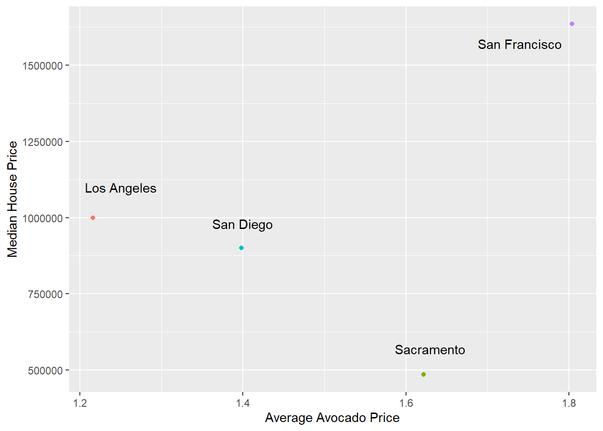

library(tidyverse)
library(tibble)
library(here)
library(janitor)
avo <- tibble(read_csv(
here::here("supporting_artifacts",
"Labs", "Lab 4", "avocado.csv")))Lab 4 Challenge
Setup
Introduction and Setup: Cleaning the Data
avo <- avo |>
clean_names()
all <- tibble(
region =
c(unique(
avo$region)))
regions <- tibble(region = c(
"GreatLakes",
"Midsouth",
"Northeast",
"NorthernNewEngland",
"Plains",
"Southeast",
"SouthCentral",
"West",
"WestTexNewMexico"))
states <- tibble(region = c("California","NewYork", "SouthCarolina"))
total <- tibble(region = "TotalUS")
metro <- all |>
anti_join(regions) |>
anti_join(states) |>
anti_join(total)Joining, by = "region"
Joining, by = "region"
Joining, by = "region"Reshaping: Just California
metro_data <- avo |>
semi_join(metro)Joining, by = "region"westcoastbestcoast <- tibble(
region = c(
"LosAngeles",
"SanDiego",
"Sacramento",
"SanFrancisco"))
cali_data <- metro_data |>
semi_join(westcoastbestcoast)Joining, by = "region"Creating house price data, joining
cali_avo_prices <- cali_data |>
group_by(region) |>
summarize(avg_avg_price = mean(average_price))
house_price <-
tibble(
region = c(
"LosAngeles",
"SanDiego",
"Sacramento",
"SanFrancisco"),
median_house_price = c(
1000000, 900000, 485000, 1635000))
cali_avo_house_prices <- cali_avo_prices |>
inner_join(house_price, by = "region")Plotting it!
plot <- cali_avo_house_prices |>
ggplot(mapping = aes(
x = avg_avg_price,
y = median_house_price,
color = region)) +
labs(
x = "Average Avocado Price",
y = "Median House Price"
) +
theme(legend.position = "none") +
geom_point()
plot +
annotate("text", x = 1.25, y = 1100000, label = "Los Angeles") +
annotate("text", x = 1.4, y = 980000, label = "San Diego")+
annotate("text", x = 1.63, y = 570000, label = "Sacramento") +
annotate("text", x = 1.74, y = 1570000, label = "San Francisco")